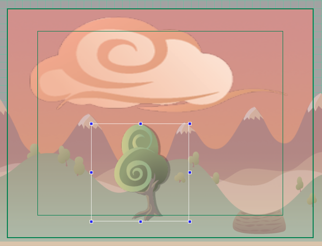
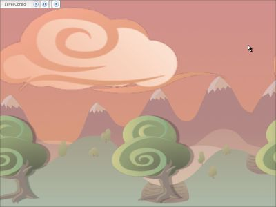

Figure 18
Figure 19
Torque 2D - Scroller Tutorial
In this document, you will learn how to set up background images for use in a scroller. Controlling the speed and getting that cool parallax scrolling effect are of course topics that will be covered.
Alright, let’s see how to get some stuff up on the screen!
We will begin by loading up T2D and opening the TutorialBase project. If you still have TutorialBase as your current project, great! If not, go to File > Open Project... (Figure 1) and locate games/TutorialBase/project.t2dproj.
Figure 1
You should now have an empty screen with the default starter art content (next page, as shown in Figure 2):
Figure 2
To start off, grab the dusk_skyImageMap (as shown in Figure 3) from your Static Sprites rollout. Drag it into the scene view. We'll be using this as the background, so drag its sizing handles until it completely covers the camera view (next page, as shown in Figure 4).
Figure 3
Figure 4
Before we leave the edit tab, in the same section of the rollout (Scene Object) change the layer to 30 (as shown in Figure 5).
Figure 5
Note: T2D uses a layer system to determine which items in a game are going to be viewed in front of everything and which items are going to be viewed behind everything. T2D has 32 layers to choose from - the smaller the layer number, the closer to the front the object is. All objects default at layer 0 when they are initially brought into the scene - the front-most layer.
OK, back to the Create tab! Let's add our first Scroller object. In the Scroller rollout, drag the cloud in the list into the scene view (as shown in Figure 6).
Figure 6
With the cloud still selected, click on the Edit tab again. Now we can edit the properties of this object.
Figure 7
If you are using a Design Resolution of 1024x768, your clouds should now look like the picture below (as shown in Figure 8). If you are using a different resolution, try and match your objects in size and position as the following examples are shown.
Figure 8
Now it's time to actually do what we set out for in this tutorial - make it scroll! In the rollout named Scroller (at the top just above Scene Object), you can see fields for editing the basic properties of the scroller. Let's start simple and just play with the speed. For this to look good, let's set the X scroll speed to 5. And surprise, you can actually see it scroll in the scene view! Feel free to play around with the speed. When you are done, set it back to 5 (as shown in Figure 9).
Figure 9
At this point, let's save what we have as a scene named "Scroller". If you are unsure of how to do save your scene, click here.If you are unsure of how to do save your scene, click here.
Good, our scene is now saved. If you want, you can now click on the play button in the toolbar and see our simple scene as it appears in game (as shown in Figure 10).
Figure 10
Now that we have the basics down, let's get working on a much nicer looking scene!
Combined with T2D's multiple layer capabilities, we can create some great looking scrolling scenes. Let's continue with the scene we have and add more.
|
|
|
|
Go back to the create tab, and drag the mountains scroller (dusk_farScrollImageMap ) into the scene view (as shown in Figure 13). We want to have this appear behind the grass scroller. Set the position, size and layer (as shown in Figure 14).
|
|
|
|
Following
the same procedure we've been using, add the tree as a scroller, so that it
looks like Figure 15.

Figure 15
Now, in the Edit tab, set the tree's Scroll Speed X to 10. It scrolls alright, but only within its boundaries (see Figure 16). In order to make it scroll across the whole screen, stretch the scroller so that its boundaries are outside the camera view. Now it reaches across the screen, but it's a bit deformed. To fix this, go back to the Scroller area in the Edit tab and change the Repeat X to 2. This tells the scroller to repeat its graphic twice along the X axis. Experiment with some different values in Repeat X if you want to see examples of this. Your scene should now look like Figure 18.
|
|
|
|
|
|
Let's
turn on scrolling for all of the objects in the scene now. Here are some
Scroll Speed X values to start with:
|
Tree |
10 |
|
Hills |
10 |
|
Mountains |
5 |
|
Clouds |
3 |
Feel free to experiment with other values. Just remember that the further away something is, the slower it seems to move... so the more distant objects in the scene should always have lower scroll values. When you are happy with what you have, remember to save and press the Play button to see your scene in all it's scrolling glory (as shown in Figure 20).

Figure 20
Hopefully
everything important about scrollers is clear to you now. Keep in mind that to
add an image to the scroller rollout, the image map has to be in Full
mode, not Cell. Also, scrollers will display correctly only if their dimensions
are powers of 2 (i.e. 256 x 512, 64 x 64 etc.) If you have done other basic
tutorials, you can add a "player" sprite to the mix and get a good feel for how
a potential scrolling game might play. For another great example, load up the
scroller demo and take note of how it handles scrolling backgrounds. Instead of
Scroller objects, tile layers with wrapping turned on (through scripting) are
used, which is a more advanced technique.
Thanks for reading!
Revision 1.2